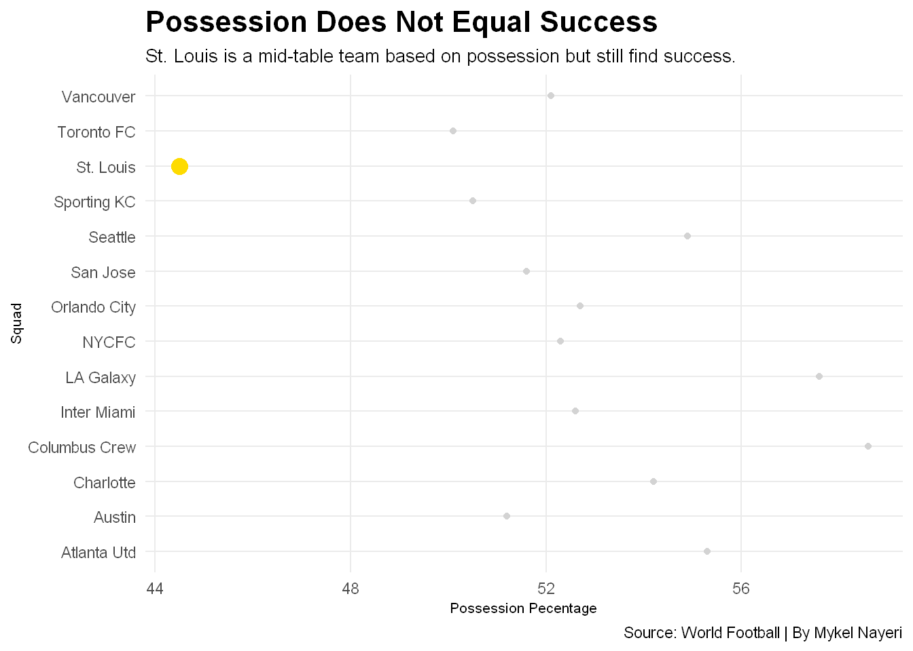

Is St. Louis City SC The Best Expansion Franchise Ever?
Project 2
Author
Mykel Nayeri
Published
July 4, 2024
St. Louis City’s attack is spearheaded by Klauss and Jared Stroud. Klauss is currently the second-highest goalscorer in the MLS with five goals and has registered 30 possessions in the opposition’s penalty area, the second-highest in the league. He also boasts the best shooting grade among forwards and ranks third overall in the MLS with a grade of 90.3. Stroud, on the other hand, has scored two goals and has generated five goalscoring chances. He leads the league in shooting grade at 91.8 and has improved his ball carry grade to 75.4 this season from 67.7 in his last full season with Austin FC in 2021. Together, Klauss and Stroud are the only players from the same team to rank in the top 10 of the MLS shot grades, occupying the first and third positions.
Code
library(tidyverse)library(cowplot)library(ggalt)library(ggtext)library(ggbeeswarm)library(ggrepel)library(worldfootballR)mls_shooting <-fb_season_team_stats(country ="USA", gender ="M", season_end_year ="2023", tier ="1st", stat_type ="shooting")goals <- mls_shooting %>%filter(Team_or_Opponent =="team", Gls_Standard >10) STL <- mls_shooting %>%filter(Squad =="St. Louis")ggplot() +geom_lollipop(data=goals, aes(x=Gls_Standard, y=Squad), horizontal =TRUE) +geom_lollipop(data=STL, aes(x=Gls_Standard, y=Squad), horizontal =TRUE,size =1, color="#E0004D")+geom_text(data=STL, aes(x=33, y=1.5, label="hello")) +#geom_text(data=STL, aes(x=Gls_Standard, y=Squad, label=Squad)) +#geom_encircle(data=STL, aes(x=Gls_Standard, y=Squad), s_shape=.1, expand=.01, colour="Purple")+ labs(x="Goals Scored", y="Squad", title="The SC In STLSC Means Scoring Club", subtitle="Highest scoring teams throughout the start of The 2023 MLS season.", caption="Source: World Football | By Mykel Nayeri") +theme_minimal() +theme(plot.title =element_text(size =16, face ="bold"),axis.title =element_text(size =8), plot.subtitle =element_text(size=10), panel.grid.minor =element_blank() )
St. Louis City’s Eduard Löwen, one of their two Designated Players, has been a key player in their midfield this season. The former Vfl Bochum player has recorded one goal, three assists, and eight key passes. His playmaking abilities are evident in his 32 completed line-breaking passes, which rank him T-18th out of 305 players. Löwen has also achieved a crossing grade of 76.0, which is the sixth-highest among 66 players in his position, and a passing grade of 73.5. However, his defensive record has not been as impressive, as he has only won 33% of his challenges, including defending two out of nine dribbles and winning three out of 14 aerial duels. His challenger grade currently stands at 67.1, which is ranked 54th among midfielders. Despite this, Löwen’s overall grading profile is still better than most midfielders, although it does not reach an elite level.
Code
mls_possession <-fb_season_team_stats(country ="USA", gender ="M", season_end_year ="2023", tier ="1st", stat_type ="possession")possession <- mls_possession %>%filter(Team_or_Opponent =="team", Poss >50) STL2 <- mls_possession %>%filter(Squad =="St. Louis")ggplot() +geom_point(data=possession, aes(x=Poss, y=Squad), color="light grey") +geom_point(data=possession, aes(x=Poss, y=Squad), color="light grey")+geom_point(data=STL2, aes(x=Poss, y=Squad), color="#FEDB00") +labs(x="Possession Pecentage", y="Squad", title="Possession Does Not Equal Success", subtitle="St. Louis is a mid-table team based on possession but still find success.", caption="Source: World Football | By Mykel Nayeri") +theme_minimal() +theme(plot.title =element_text(size =16, face ="bold"),axis.title =element_text(size =8), plot.subtitle =element_text(size=10), panel.grid.minor =element_blank() )

St. Louis SC has given up only four goals in five games, thanks in large part to their consistent centre-back pairing. Tim Parker, who joined the team this season, has been a standout performer, winning 68% of his challenges and 13 of 19 aerial duels. His overall PFF challenge grade of 82.3 is the 12th-best among centre-backs in the league. However, his passing has been below average, with a true passing percentage of 76% ranking him 48th among qualifying centre-backs. He has made up for this by taking chances with his passes, ranking sixth overall in line-breaking passes attempted. Meanwhile, Kyle Heibert has been impressive in his MLS debut season, winning 75% of his challenges and producing a Challenger grade of 87.4, the third-best among qualified centre-backs. His passing has also featured line-breaking passes, ranking 14th overall in the league, although his true pass completion percentage of 75% ranks 56th.
Code
mls_defense <-fb_season_team_stats(country ="USA", gender ="M", season_end_year ="2023", tier ="1st", stat_type ="defense")defense <- mls_defense %>%filter(Team_or_Opponent =="team", Int >100) STL3 <- mls_defense %>%filter(Squad =="St. Louis")ggplot() +geom_bar(data=defense, aes(x=reorder(Squad, Int), weight=Int)) +geom_bar(data=defense, aes(x=reorder(Squad, Int), weight=Int),fill="light grey") +geom_bar(data=STL3, aes(x=reorder(Squad, Int), weight=Int),fill="#0C2340") +scale_fill_manual(values ="#0C2340") +coord_flip()+labs(x="Squad", y="Interceptions", title="St. Louis Wants The Ball Back", subtitle="St. Louis is the seventh leading team in the MLS at interceptions.", caption="Source: World Football | By Mykel Nayeri") +theme_minimal() +theme(plot.title =element_text(size =16, face ="bold"),axis.title =element_text(size =8), plot.subtitle =element_text(size=10), panel.grid.minor =element_blank())
In conclusion, St. Louis City SC has a real shot at the US Open Cup, MLS Supporters Shield, and MLS Cup if they can keep their pieces together throughout the season and the goals keep coming. For their first season as an expansion franchise, they are paving the way for other clubs coming down the road.